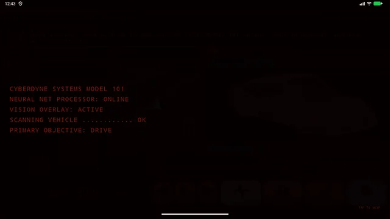
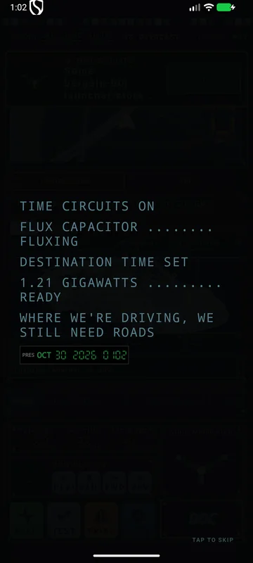

Which one? FOUR DEDICATED APPS
Each edition is built specifically for its form factor and screen geometry with its own dedicated layout, app ID, and auto-update channel. You can install all four side by side to compare them.
KITT Launcher
The original full-detail cockpit. Laid out for tall 9:16 vertical displays: navigation map on top, instrument dials and apps in the center, and a dedicated multi-touch trip and media dock below.
- Full animations at high refresh rates on portrait head units.
- Optimized for vertical dash panels with stacked telemetry clusters.

Pick it if your car has a vertical touchscreen (Tesla-style 11" to 13") and you want the classic red Knight Rider instrument layout.
Download KITT LauncherKITT Launcher.2
Engineered from scratch for widescreen head units. Vertical real estate is protected: navigation controls and KITT AI move to an interactive side rail, while the dock condenses to an ultra-slim driving row.
- Auto-scaling: dynamic element sizing across 7", 8", 9", and 10.1" dash units.
- Hardware Lite Mode: auto-activates on budget 2GB/3GB quad-core units to ensure fluid 60fps operation without dropping frames.

Pick it if you have a standard double-DIN landscape head unit (7" to 10.1") and want an ultra-responsive classic cockpit.
Download KITT Launcher.2KITT Holo Landscape
The next-generation holographic interface. A 3D wireframe hologram of your car turns on the Drive page with real-time telemetry callout pins (coolant, speed, revs, battery, tires) anchored in 3D space.
- Touch Turntable: swipe to spin the vehicle manually with smooth inertia decay glide; car and truck body styles.
- PID Callout Badges: live data callouts positioned around the vehicle with tap-to-expand data cards.
- Film Cockpits: Terminator T-800 Cyberdyne HUD, RoboCop visor, and DeLorean time circuits.

Pick it if your head unit is a landscape widescreen (7" to 10") and you want the full 3D interactive holographic turntable experience.
Download Holo LandscapeKITT Holo Portrait
The flagship holographic experience tailored for tall vertical screens. Centers the 3D vehicle turntable between upper mission telemetry and lower cockpit quick-controls.
- Vertical Staging: full 3D vehicle projection with expanded pitch and elevation perspective.
- Expanded Diagnostics: live PID callouts with extra diagnostic instrumentation cards.
- Film Cockpits: high-density Terminator vision grid, Matrix CRT rain, and DeLorean brushed metal.

Pick it if you have a tall portrait display (11" to 13" Tesla-style) and want an immersive 3D holographic cockpit.
Download Holo Portrait| Feature | KITT Launcher | KITT Launcher.2 | Holo Landscape | Holo Portrait |
|---|---|---|---|---|
| Target Hardware | 11"–13" Portrait | 7"–10" Landscape | 7"–10" Landscape | 11"–13" Portrait |
| Cockpit Style | Classic KITT Console | Classic KITT Side Rail | 3D Hologram Cockpit | 3D Hologram Cockpit |
| 3D Vehicle Turntable | — | — | 72-Angle Manual Spin | 72-Angle Manual Spin |
| Live Telemetry Callouts | Gauges Page | Gauges Page | Pinned Vehicle Badges | Pinned Vehicle Badges |
| Film Cockpit Redesigns | Color Themes | Color Themes | Terminator / RoboCop / BTTF | Terminator / RoboCop / BTTF |
| Entertainment Hub | Yes (v2.2) | Yes (v2.2) | Yes (v2.2) | Yes (v2.2) |
| Built-In Cockpit Widgets | All 7 | All 7 | All 7 with Film Frames | All 7 with Film Frames |
| 16-Band Visualizer | Yes | Yes | Yes | Yes |
| Package Name | com.aiconsole.knightriderlauncher | com.aiconsole.kittlauncher2 | com.aiconsole.kitthololandscape | com.aiconsole.kittholoportrait |
In action VIDEO DEMOS
Watch the launchers running live. Video clips play automatically when in view; tap any clip to enter full screen.
KITT Launcher.2 · 7" Landscape
KITT Launcher · 12.1" Portrait
KITT Holo 3D HOLOGRAPHIC COCKPIT
A complete cockpit revolution. The Drive screen projects a rotating 3D wireframe vehicle hologram rendered from 72 pre-rendered Blender vector camera angles. Touch to spin the vehicle manually with smooth velocity-decay physics, or let it rotate at cruising speed. Direct vehicle PID callouts float around the body with tap-to-expand telemetry cards.
Holo Landscape Cockpits
Holo Portrait Cockpits · Tall 9:16 Screens
Entertainment Hub PIRADEX STREAMING & GAMES
The Games screen is now the Entertainment Hub across all menus, side rails, and voice commands. Combines live streaming sports, live TV broadcast directories, on-demand movies, and retro arcade emulation with visual brand recognition emblems.
Piradex Live Streaming Portals
- Live Sports Streaming: Instant access to sports live streaming portals with match schedules, active streams, and mirror fallbacks for NFL, NBA, MLB, Premier League, UEFA, Formula 1, UFC, boxing, and college athletics.
Live Sports StreamEast Sportsurge CrackStreams BilaSport FootyBite
- Live TV List: Curated live streaming TV directories featuring 24/7 news, music television, weather networks, global broadcast feeds, and local IPTV channels.
Live TV List Pluto TV Xumo Play Samsung TV Plus Plex Live
- Movies & TV Shows: Complete free streaming portals for full-length movies, bingeable series, anime, and documentary cinema.
Movies & TV Tubi TV Fandango Crackle Kanopy Hoopla
Visual Brand Recognition
- Visual Emblems: No more generic text buttons. Every site card features a distinctive vector brand badge and themed visual layout so drivers can identify destinations instantly at a glance.
- High-Contrast Badges: Emblems adapt dynamically to your cockpit theme (KITT red, Terminator amber/crimson, Matrix green phosphor, RoboCop visor blue).
Audio Focus & Video Protection
- Audio Playback Protection: Fixed video playback stopping after < 1 second on streaming services (Tubi, Pluto, YouTube) by preventing spurious audio-focus drops.
- Background Playback: Video audio continues seamlessly when navigating between pages or checking live OBD gauges.
- Renderer Isolation: Stuck heavy web pages fail safely without freezing the head unit.
Retro Arcade Suite (from RetroTV)
- One-Tap Web Emulators: RetroGames.cc, PlayClassic, ClassicReload, webЯcade, Internet Arcade, MS-DOS archives.
- Gamepad Support: Full USB and Bluetooth controller mapping; analog sticks map to virtual D-pads with zero input lag.
- On-Screen Touch Pad: Retro directional pad and fire buttons for touchscreens when no gamepad is connected.
Driver Cockpit Widgets 7 BUILT-IN DASH TOOLS
Seven native driver widgets built directly into the launcher's Widgets page. Designed specifically for in-car tasks and framed to match all cockpit film themes (KITT scanlines, Terminator HUD brackets, Matrix CRT ticks, DeLorean brushed metal with rivets, RoboCop hazard stripes).
Music & 16-Band Visualizer AUDIO ENGINE
Real-time graphic audio spectrum visualizer integrated into the Media screen and Holo cockpit dock, paired with a unified Music & Radio hub.
16-Band Real-Time Audio Visualizer
- 16 Frequency Bands: Sub-bass (30–60 Hz), mid-bass, midrange, presence, and brilliance (up to 16 kHz).
- Hardware Audio Session Capture: Analyzes live audio output with fast FFT calculation.
- Peak Hold Markers: Persistent indicators mark acoustic peaks with realistic ballistic decay.
- Theme Colors: Scanner red, Terminator amber, Matrix green, or Holo electric cyan.
Music & Internet Radio Hub
- Curated Live Radio Stations: One-tap streaming radio presets (Nightdrive Synthwave, 80s Rock, K-Rose Country, Vice City Pop, Lo-Fi Chill, Cyberpunk Industrial, Ambient Space).
- Local USB & Storage Player: Browse local MP3/FLAC music files by folder, artist, and album.
- MediaSession Integration: Displays album art, track progress, and playback controls for Spotify, YouTube Music, Apple Music, and podcast apps.
Classic Screens TAP TO ENLARGE
KITT Launcher on a portrait head-unit screen. KITT Launcher.2 on a 7" landscape screen is further down.
KITT Launcher.2 · 7" Landscape, 1024×600
The look 11 THEMES · 12 EDITIONS
The scanner light never stops sweeping, and every screen wears the theme you pick.
11 Themes
Home screen pages SWIPE
Swipe left and right between pages or tap the page buttons. A swipe starting at the edge always changes page. The Home button always returns you to Drive.
Drive
- Live map (OpenStreetMap) with vehicle status underneath. Side by side on landscape screens.
- Search and turn-by-turn directions with spoken turn prompts.
- Holo vehicle turntable on Holo editions with live PID telemetry callouts.
Gauges · Media
- Gauges: full wall of OBD gauges. 11 selectable gauge styles.
- Media: real-time 16-band visualizer, streaming radio stations, USB library, and active player controls.
AI · Entertainment · Widgets
- AI: Gemini, Claude, and Perplexity accounts in tabs.
- Entertainment Hub: Piradex live sports streaming, live TV list, free movies, and retro arcade emulation with gamepad support.
- Widgets: 7 built-in cockpit driver widgets plus any regular Android widgets.
Apps
- Search, A–Z jump rail, and most-used smart sorting.
- Pin favorite apps to the quick dock or hide system utilities.
KITT, the AI co-pilot VOICE & TELEMETRY
Talk or type. Use the mic button, steering-wheel voice key, or "Hey KITT" offline wake-word. Questions include your live OBD readings, trouble codes, and trip summaries.
Google Gemini & Perplexity
- Fast conversational model with smart diagnostic deep-dive reasoning.
- Google Search grounding with source citations.
- Bring your own API key; keys are encrypted in Android Keystore.
Personalities & Voices
- Savage KITT (default): Hilariously sarcastic, roasts your driving while delivering 100% exact technical telemetry.
- Classic KITT: The polite, protective 1982 TV series voice.
- KARR: Cold, superior, calculating evil twin.
- Offline Neural Voices: High-quality local voice models running directly on device with zero internet.
Car scanner OBD-II DIAGNOSTICS
Connect any ELM327-compatible Bluetooth (Classic or BLE) or Wi-Fi adapter for real-time engine telemetry, custom PID formulas, and emission checks.
Trouble Codes
- Stored, pending, and permanent DTC fault codes explained in plain English.
- Freeze-frame sensor snapshots and inspection readiness checks.
- Ask KITT directly to diagnose any trouble code.
Live Sensors & Manufacturer PIDs
- Supports GM, Ford, Toyota, Stellantis, Honda, Nissan, Hyundai/Kia, VW, BMW, Mercedes, Subaru, Mazda.
- Custom Torque-style formula evaluator with multi-PID batching.
- CSV diagnostic data logging to storage.
Browser STREAMING · AI · GAMES
Dedicated tabbed web engine powering the Stream window, AI assistant page, and Entertainment hub.
Built for Car Dashboards
- Full ad-blocking engine with pop-up suppression.
- Automatic mobile/desktop view switcher per site.
- Tampermonkey-compatible userscript support.
Audio Stability
- Maintains background playback across page swipes.
- Smart audio-focus handoff with navigation and speech synthesis.
Install APK DOWNLOADS
All four editions are distributed directly via GitHub Releases. Free, no ads, no trackers.
Installation Steps
- Download the
.apkfor your edition below directly onto your head unit or via USB drive: - Tap to install and grant "Unknown Sources" permission.
- Press the Home button, select your KITT edition, and choose Always.
In-App Upgrades
- Each edition checks its own release repository automatically via KITT Config → Updates.
- Seamless in-place updates without losing settings or custom PIDs.
What's new VERSION 2.2.0
In-app updates check GitHub automatically. Direct release pages: KITT Launcher · KITT Launcher.2 · Holo Landscape · Holo Portrait.
v2.2.0 · Four Dedicated Standalone Editions & Entertainment Hub
- Four Standalone App Editions: KITT Launcher, KITT Launcher.2, KITT Holo Landscape, and KITT Holo Portrait now build and release independently with dedicated app IDs, tailored UI geometry, and isolated release updater channels.
- 3D Holographic Turntable & Touch Rotation: Smooth touch manual rotation and glide physics for Coupe and Truck wireframes across 72 camera angles.
- Direct Vehicle PID Telemetry Callouts: Live sensor badges pinned around the vehicle in 3D space with tap-to-expand telemetry cards (coolant, speed, revs, battery, tire pressures).
- Entertainment Hub (renamed from Games): Overhauled with Piradex live sports streaming, live TV list, free movies/shows, and retro arcade emulation.
- Visual Brand Recognition: High-contrast vector emblems and distinct cards for all streaming portals and games so drivers can identify destinations before tapping.
- Seven Built-In Cockpit Driver Widgets: Nav Quick Dispatcher, Parking Sentry & Car Finder, Attitude Inclinometer, Cabin Sound SPL Meter, Dash Scratchpad, Unit Converter, and Vehicle Emergency Battery Sentry—wrapped in authentic film frames (Terminator, Matrix, RoboCop, Future).
- 16-Band Graphic Visualizer & Music Hub: Real-time 16-band audio visualizer with peak hold markers and a dedicated Music & Radio hub with internet radio stations.
- Audio-Focus Protection: Fixed video playback stopping after < 1s on Tubi and streaming services; robust background playback and memory protection.
v2.1.0
- Holo Callouts: Interactive callout pins around the vehicle with tap-to-expand telemetry cards.
- Grid Stage: Hologram grid staging and rounder truck wireframe geometry.
v2.0.2
- Stability & Safe Mode: Silent restart tracking, Android termination logging, car/truck vehicle pills on Drive.
Privacy and safety
- API keys are encrypted on the device and never included in backups or problem reports.
- No analytics or tracking. The app only connects to the AI service you chose, Open-Meteo weather, the NHTSA VIN lookup, map tiles, OpenStreetMap routing, and the sites you open.
- The car is read-only. No clearing codes, ECU changes, or write commands unless you press the button for that exact action.